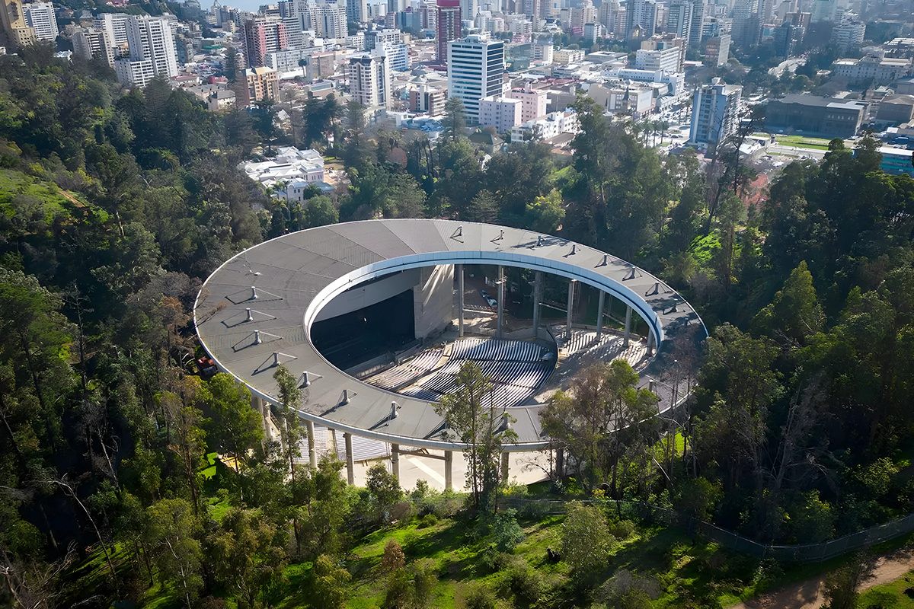

¿Seguro para gaviotas de plata?
Capaz sea necesario para asistir al Festival de Viña este año...
Capaz sea necesario para asistir al Festival de Viña este año...

Podemos decir que el Festival de Viña es un evento que nos marca que estamos en verano, que cuando lo veamos seguro estamos tomando unas chelas de cortos en nuestra casa. Porque no van a decir que no ven aunque sea un día del festival.
Hay dos tipos de espectadores para este festival, los que lo ven desde la comodidad de su hogar o los que van hasta Viña para tratar de ver a su artista favorito lo más cerca posible y en persona. Estos últimos se dividen en dos a su vez, los que participan solo el día que más les gusta y los que se alquilan un depa o casita para tomarse vacaciones, ir al festival y también rogar cruzarse algún famoso por ahí.
¿Por qué hacemos toda esta subdivisión?
Por los niveles de riesgo de cada audiencia, sí, riegos.
Vamos a empezar por los llamados “cómodos”, estos tienen un riesgo bajo, existen por supuesto. Pueden ser, no llegar a tiempo a su casa para ver la transmisión, que se corte la luz o cualquier otro incidente doméstico.

Los segundos que serían los “aventureros”, estos organizan su día, su fin de semana por ir a vivir en carne propia todo el cahuín que se cuece en ese tiempo. Estos poseen un nivel de riesgo medio a elevado. Se preguntarán por qué.
En primer lugar, les puede caer una gaviota de plata en la cabeza, si no pregunten a las personas que fueron a ver a Enrique Iglesias allá por los 2000s.
También existe el riesgo de morir de vergüenza, si así como leen, esto sucede cuando el mal o bien llamado “monstruo” abuchea a algún comediante que no les sacó ni una mínima mueca.
En los piletazos también hay riesgos, si no recuerden a la última reina, que no sabían nadar. ¿Se imaginan que por la presión del público se tirara? Todo hubiera sido un terrible desastre.
Igualmente, el problema aquí hubiera sido de la hermosa señorita y no del público, volvamos a ellos y sacando el chiste de lado, existen otros riegos. La cuestión es muy sencilla, si van por el día vuelven por la carretera con las personas que se aventuraron igual que ellos, los cuales pueden tener sueño o hasta estar irresponsablemente bebidos. Peligro alert. Luego los que se quedan más tiempo pueden vivir estas cuestiones, pero ya se organizan para salir en horarios menos concurridos (o no…) y evitar todo el caos vehicular.
Después de un repaso de estos acontecimientos, queremos decirles “que no cunda el pánico”, siempre hay una solución para todo y en Compara nos encanta hacerte la vida más fácil. ¿Cómo? Aconsejándote que contrates un Seguro de Auto, todavía no contamos con una para la vergüenza o daños por gaviotas de plata, pero quién dice que larguemos un “Seguro para Viña”.
Esto fue todo amigos y recuerden, si van al festival háganlo con cuidado y asegurados.
 Seguros
SegurosEl anuncio del posible impacto del Asteroide 2024 YR4 en la Tierra nos hizo recordar la película Don’t Look Up y analizar ciertos factores…
 Seguros
SegurosEl crecimiento de los autos eléctricos está siendo cada vez mayor, ya no nos sorprende ver estaciones de carga para estos, ni que algún…
 Seguros
Seguros¿Se imaginan ser los primeros en hacer algo? Es algo que con la realidad actual no sucede, ya no había nada nuevo bajo el sol, pero Compara…